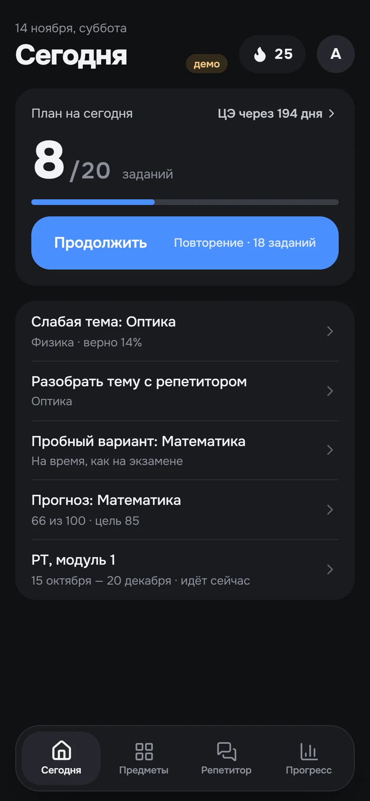
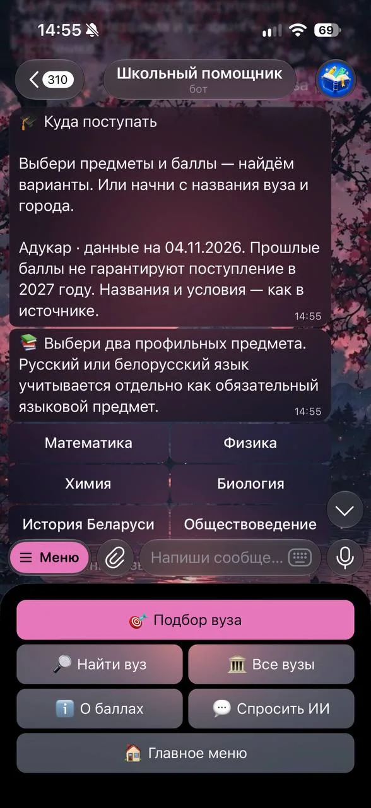
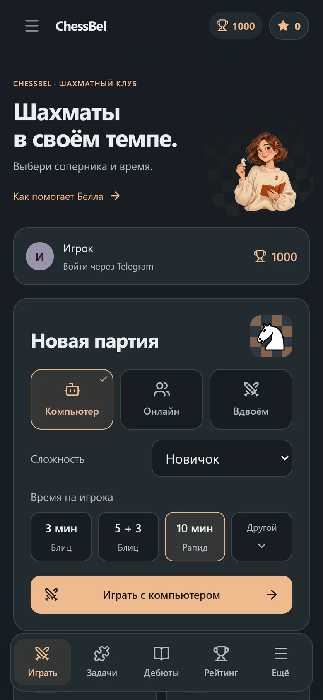
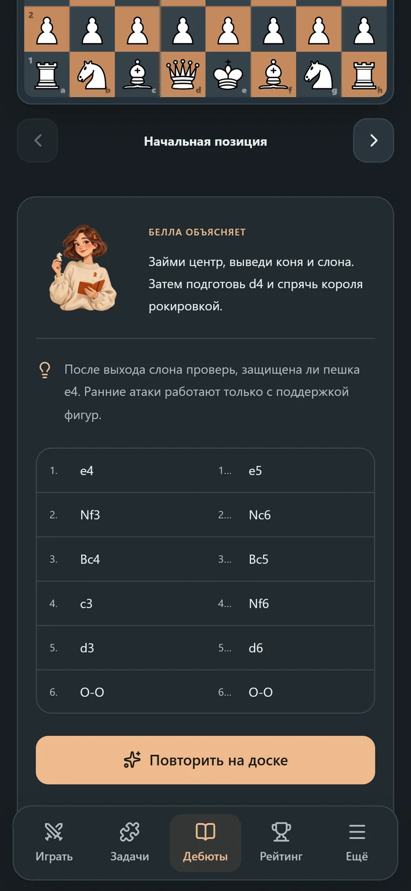
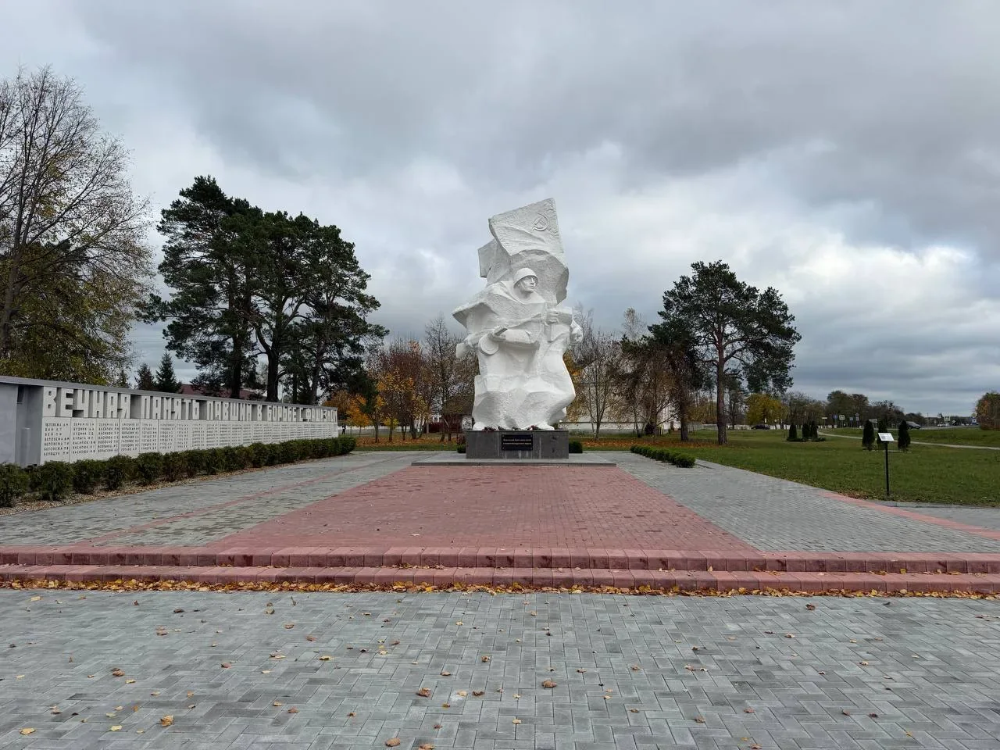
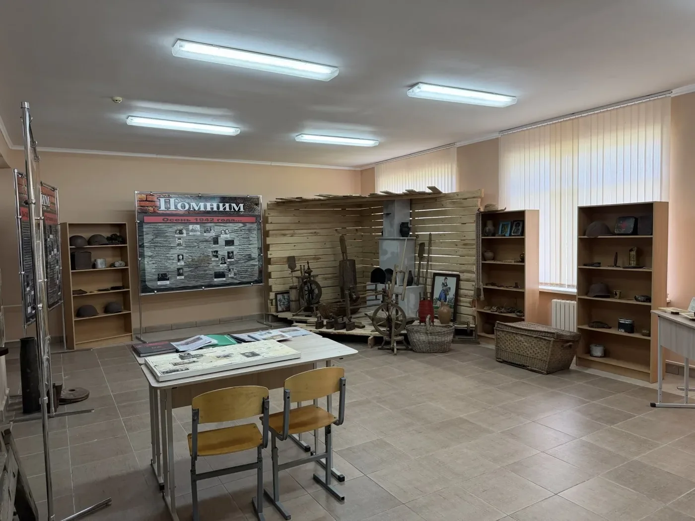
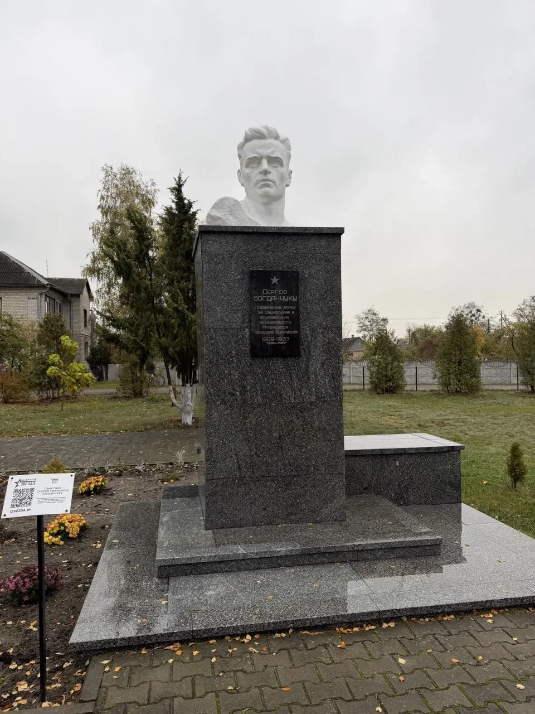
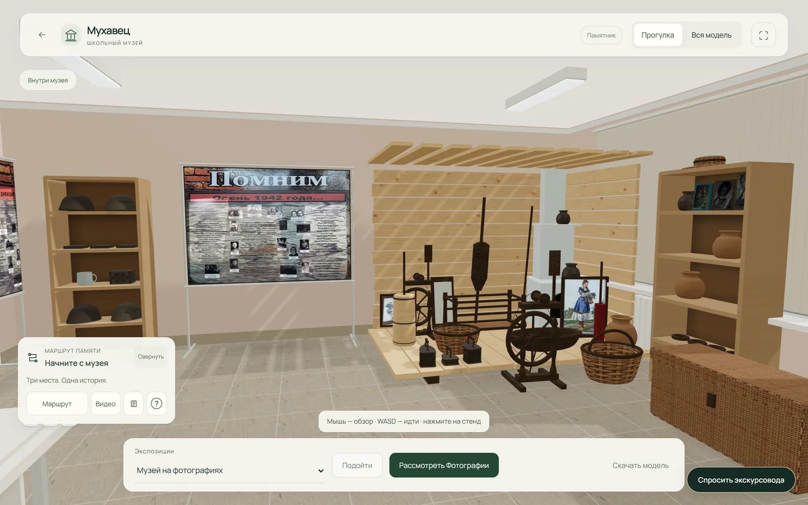
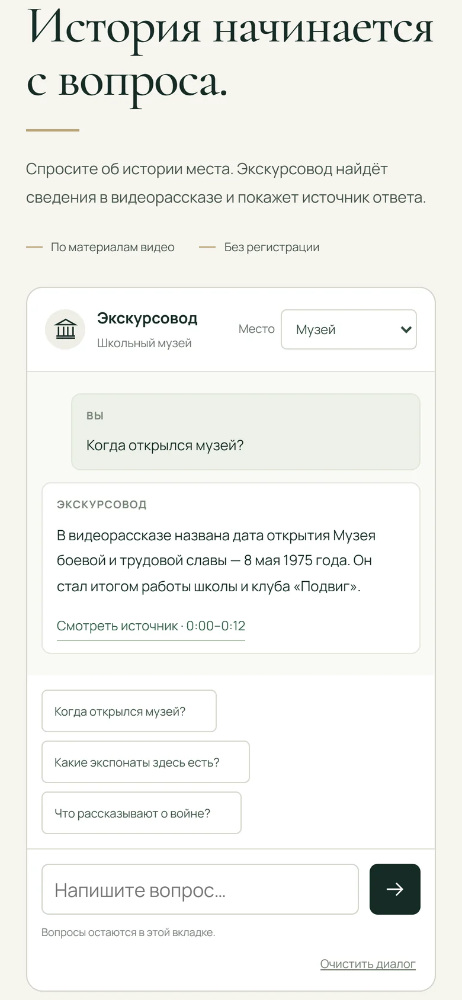

Telegram-бот для информационной поддержки и организации учебной деятельности учащихся
Якушевич Арсений, Левчук Мирослав — 11 класс
ГУО «Средняя школа п. Мухавец» · руководитель — Козик Анна Витальевна, учитель информатики
Введение · проблема
Всё нужное —в разных местах
понедельникРасписание и замены
к четвергуДомашнее задание
§ 12, с. 84Учебники и справки
до экзаменаПлан подготовки
Каждое переключение между источниками — риск забыть важное и потратить время на поиск.
Введение · цель и гипотеза
Собрать всёв одном помощнике
Цель — разработать и исследовать возможности Telegram-бота «Школьный помощник» как средства информационной поддержки, организации учебной работы и доступа к краеведческим материалам.
Гипотеза
Расписание, задания, учебные материалы и планирование в одном доступном помощнике могут сделать школьную информацию удобнее и помочь организовать самостоятельную работу.
Влияние на концентрацию требует отдельного измерения.
Объект
цифровые средства информационной поддержки учащихся
Предмет
функции школьного Telegram-бота и условия их применения
Ссылка на учебник помогает проверить ответ, но не заменяет чтение страницы.
2.4 · подготовка и поступление
К ЦЭ и ЦТ —и дальше, в вуз
«Крок» · отдельный ресурс [6]
План занятий, повторение, тренировки по предметам и пробные варианты. Репетитор разбирает ошибки, раздел прогресса показывает прогноз баллов.
Основная модель — Gemini, резерв — Qwen. Прогноз — ориентир, а не гарантия результата.
«Куда поступать» · в боте
Поиск направлений по предметам и баллам, по вузу или городу. Каталог — данные «Адукар» с указанной датой [5].
Проходные баллы прошлых лет помогают ориентироваться, но не гарантируют поступление.


2.3 · дома, после уроков
Вечером — шахматы,игры и план
ChessBel · отдельное приложение [8]
Игра с компьютером, онлайн или вдвоём, задачи, книга дебютов, рейтинг и турниры. На высоких уровнях — движок Stockfish, на начальных — учебный алгоритм.
В боте
Ребусы, викторина и «Кодовый замок» — чтобы переключиться и потренировать логику.
Планировщик
Список дел и учебный таймер: выделить время на одну задачу.


Игровые очки — не школьные отметки; таймер не измеряет внимание.
Глава 2 · краеведение
Мояродина

Мухавец · памятник землякам · 1976
2.2 · краеведение
Моя родина
Раздел ведёт на страницу школьного музея и памятных мест Мухавца: виртуальные прогулки и видеорассказы [7].

Школьный музейбоевой и трудовой славы открыт 8 мая 1975 — работа школы и клуба «Подвиг»

Памятник С. Е. Богданчукуистория человека, чьё имя связано со школой и БрестомПамятник землякампогибшим в Великую Отечественную войну, открыт в 1976
2.2 · виртуальный музей
Прогулка и экскурсовод

Посетитель ходит по трёхмерному музею, подходит к стендам и открывает видеорассказ юных экскурсоводов.
Экскурсовод сопоставляет вопрос с подготовленными сведениями и открывает нужный фрагмент видео.
Языковая модель здесь не используется — поэтому ответ есть только на то, что есть в материалах.

Глава 3 · опытное использование
15
Проверкав классе
15 одноклассников пользовались ботом с 25.10 по 14.11.2026
Глава 3 · опытное использование
Три недели в классе
15 одноклассников, 11 класс · 25.10 — 14.11.2026 · свои телефоны
≈30%концентрация
субъективная оценка учеников, не инструментальное измерение
≈95%ответы по учебникам
предварительная оценка точности
≈98%перевод RU → BE
предварительная оценка точности
Это данные, сообщённые автором. Чтобы подтвердить, нужны число проверенных ответов, критерии и проверяющие, а для внимания — задания до и после: Δ = (после − до) / до × 100 %
2.8 · данные и ограничения
Данных — минимум,роли — раздельно
Для заявки — имя, фамилия, класс и Telegram ID; доступ к функциям зависит от роли
Команда /delete_me удаляет профиль из рабочей базы бота
Учебные вопросы могут обрабатываться внешними сервисами — лишних личных данных в тексте не писать
Школе нужны ответственные за расписание, учётные записи и данные
3.5 · перспективы
Куда летим дальше
Вместе со школой
проще обновлять расписание, лучше инструменты учителя, предложения учеников
Краеведение
новые проверенные рассказы, экспозиции и прогулки
Белорусский язык
регулярная проверка интерфейса, переводов и терминов специалистом
Другие школы
после настройки их расписания, ролей и местных материалов
Заключение
Что сделано
1Один бот для школы: расписание, задания и отметки
2Помощь в учёбе на русском и белорусском — с источниками из учебников
3История Мухавца онлайн: музей, памятные места, экскурсовод
4Проверено в классе; следующий шаг — точные измерения
последнее сообщение — вамt.me/school_qwen_helper_26_bot
Приложение
Источники
UNESCO. Technology in education: 2023 Global Education Monitoring Report.